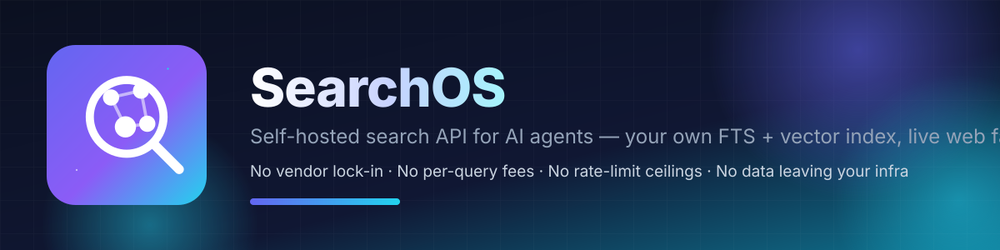

Your own index, your own API
Every query is answered from your Postgres — full-text (GIN tsvector) + vector (pgvector HNSW) fused with RRF, reranked, cached in Redis. You keep all the data; nothing leaves your infra.

Self-hosted search API for AI agents & applications. No vendor lock-in, no per-query fees, no rate-limit ceilings, no data leaving your infra.
Every query is answered from your Postgres — full-text (GIN tsvector) + vector (pgvector HNSW) fused with RRF, reranked, cached in Redis. You keep all the data; nothing leaves your infra.
SearXNG acts as a live web fallback that persists every result into your index. The more you search, the more coverage you own — and repeat queries never touch the network.
Seed a URL or a sitemap; the crawler follows same-domain links up to a configurable depth and keeps pages fresh with continuous recrawling. Dedupes by normalized URL.
A single MCP server exposes search, extract, ingest, stats, health over stdio, legacy HTTP+SSE, and the new stateless Streamable HTTP (2026-07-28 spec).
| SearchOS | SerpApi | Tavily | Exa | Jina | |
|---|---|---|---|---|---|
| Self-hosted | Yes | No | No | No | No |
| Your data stays on your infra | Yes | No | No | No | No |
| Per-query pricing | None | Yes | Yes | Yes | Yes |
| Rate-limit ceilings | None | Yes | Yes | Yes | Yes |
| Index grows with usage | Yes | No | No | No | No |
| Clean LLM-ready content | Yes | Partial | Yes | Yes | Yes |
| MCP integration | Yes | No | Yes | Yes | Yes |
docker compose --profile web up -d --build
export ADMIN=$(grep BOOTSTRAP_ADMIN_API_KEY .env | cut -d= -f2)
# seed a page
curl -s -X POST http://localhost:8000/v1/admin/ingest \
-H "Authorization: Bearer $ADMIN" -H "Content-Type: application/json" \
-d '{"url":"https://en.wikipedia.org/wiki/Vector_database","kind":"url"}'
# search it
curl -s "http://localhost:8000/v1/search?q=vector+database" \
-H "Authorization: Bearer $ADMIN"